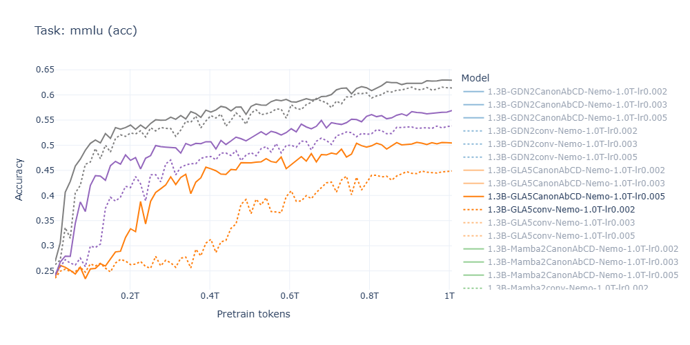
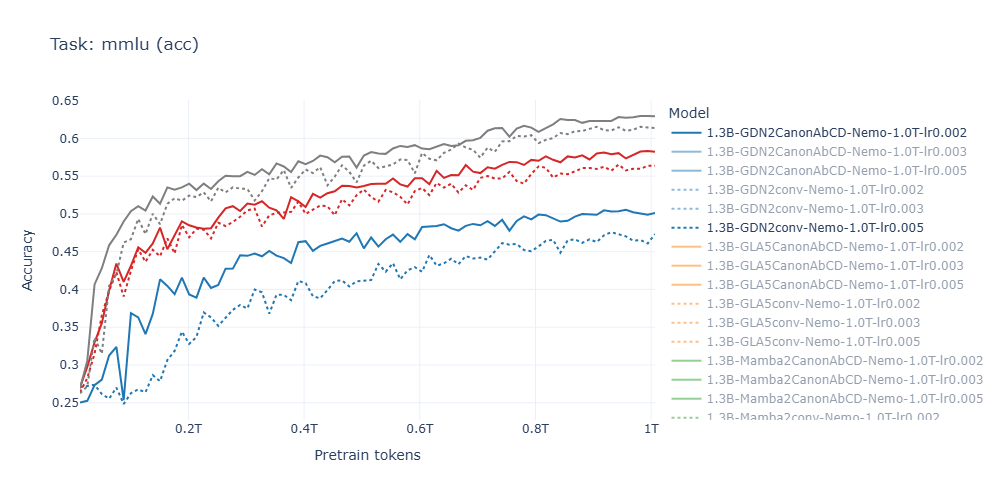

- GLA+Canon MMLU curves rise faster and higher than GLA-conv at all scales (1B/3B/8B)
- GDN+Canon shows smaller but consistent improvements over GDN-conv
- At 1.3B: GLA5+Canon approaches GDN2-conv performance — a remarkable result for the simplest linear architecture
- Relative rankings match synthetic predictions faithfully at every checkpoint
At 8B scale: GLA+Canon and GDN+Canon both reach ~67–68% on lm_eval average — within noise of each other. The architecture matters less than having Canon.

MMLU accuracy: GLA ± Canon (1.3B, best LR per model)
MMLU accuracy: GDN ± Canon (1.3B, best LR per model)